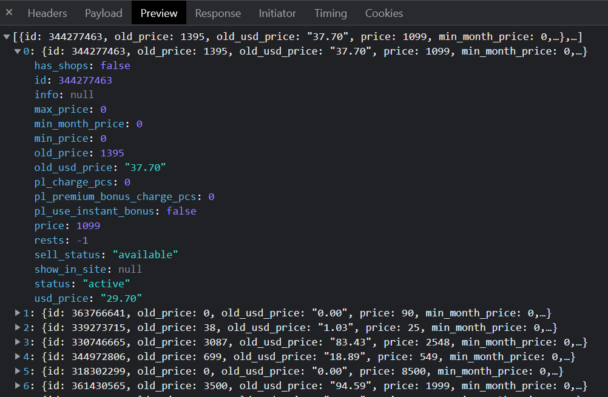

Описати масив об’єктів – сайтів розроблених компанією з такими властивостями
----- Властивості ------
Знайти:
Розробити функцію, у яку передають об’єкт (день, місяць, рік). Визначити, який буде рік через N місяців.
Ось приклад відповіді з одного з сайтів (масив об’єктів з інформацією про товари)
(весь текст масиву, що в кінці документу скопіюєте в код).